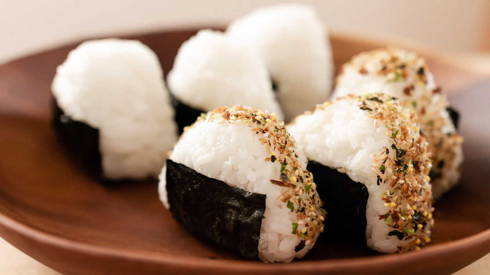

Onigiri

Onigiri is a simple and delicious preparation from the Japanese cuisine
How to make onigiri
You'll need the following ingredients
- Rice
- Nori Seaweed
- Salmon or it could be anything that you want
- Soy Sauce it is optional
Steps :
- Gather the ingredients
- Bake then flake the salmon
- Rinse and cook the rice.
- Fill portions of rice with salmon
- Form the onigiri into a ball by using your hands
- Cut the nori into strips
- Eat it!
Return to index